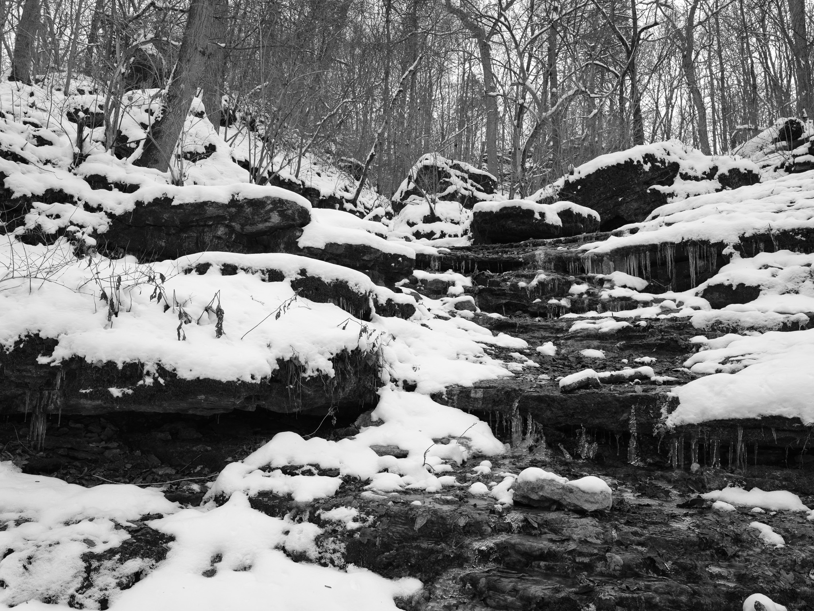
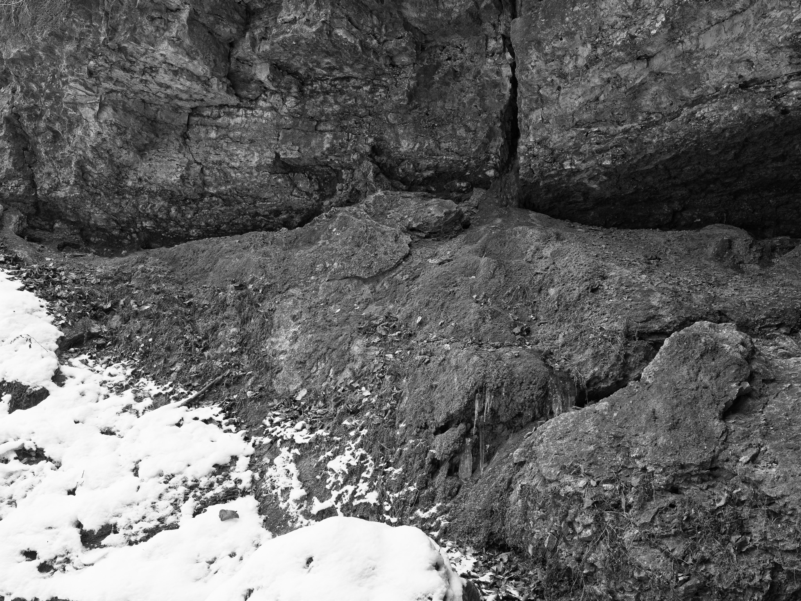
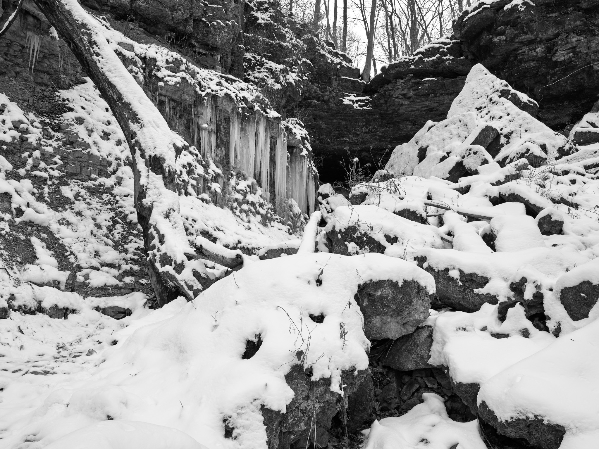
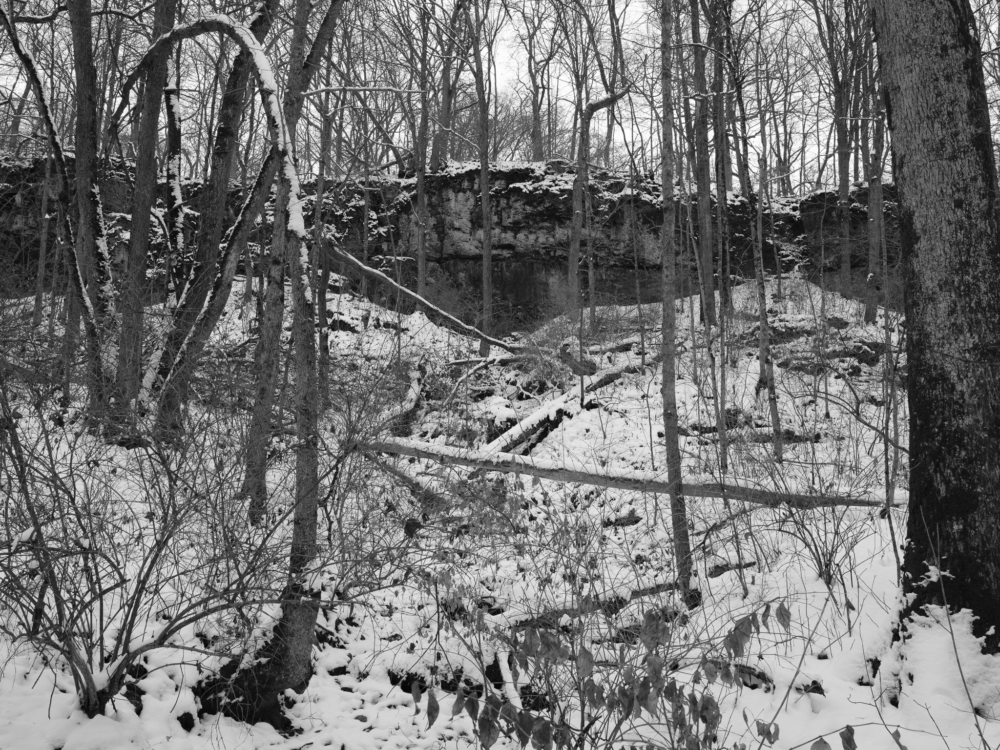
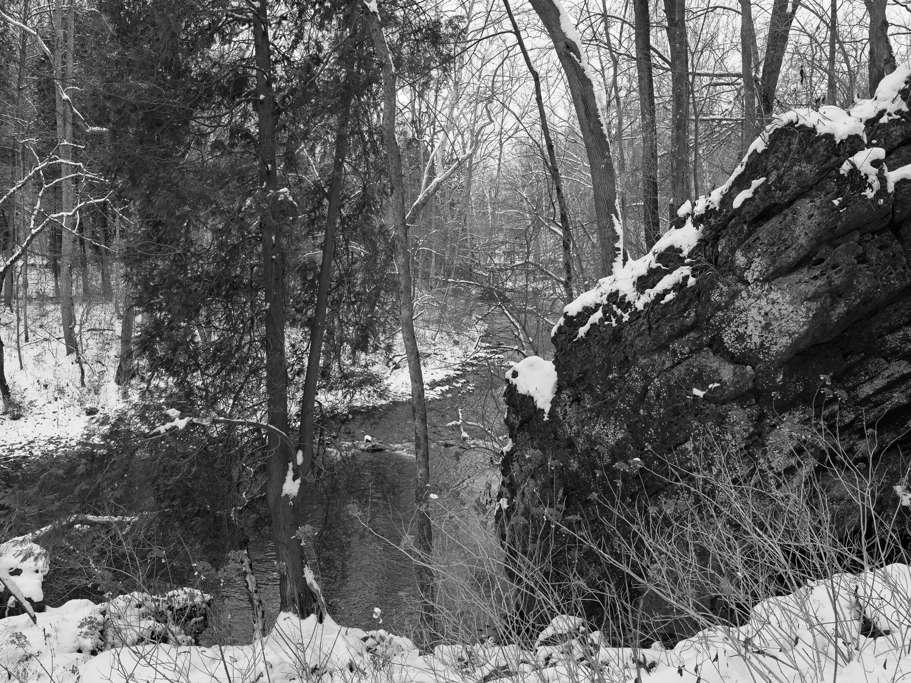
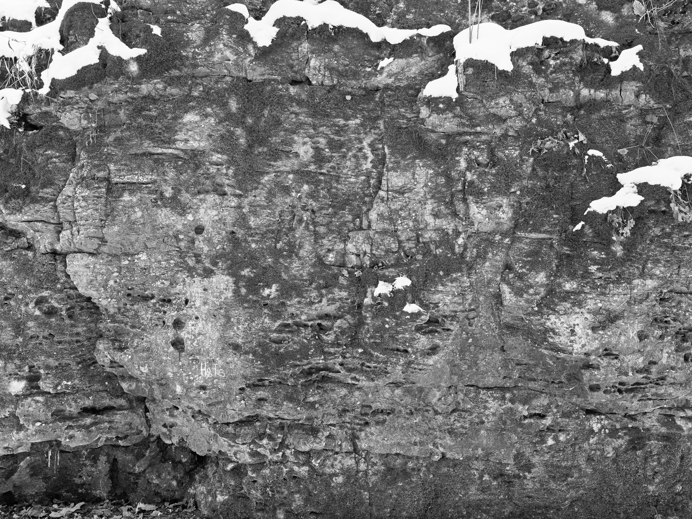
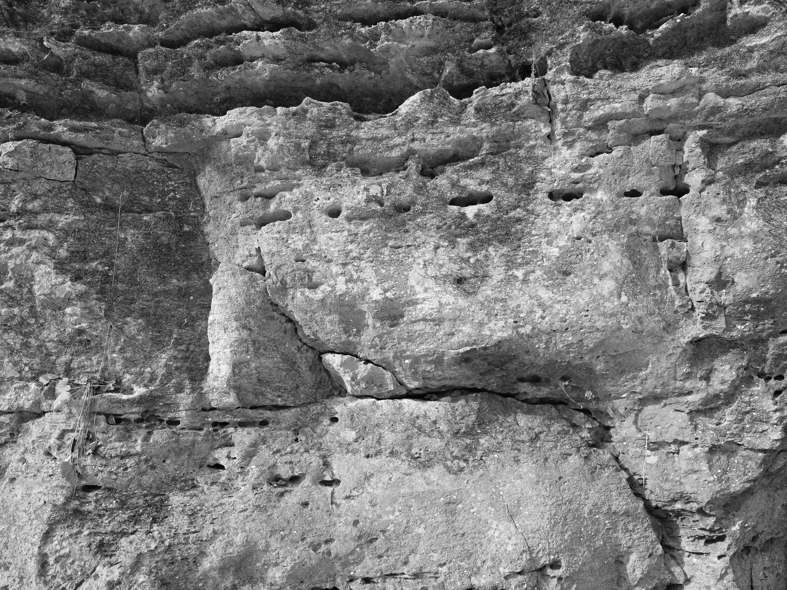

John Bryan State Park I · 2025-12-05
_DSF0446.jpg

John Bryan State Park II · 2025-12-05
_DSF0467.jpg

John Bryan State Park III · 2025-12-05
_DSF0470.jpg

John Bryan State Park IV · 2025-12-05
_DSF0472.jpg

John Bryan State Park V · 2025-12-05
_DSF0488.jpg

John Bryan State Park VI · 2025-12-05
_DSF0494.jpg

John Bryan State Park VII · 2025-12-05
_DSF0497.jpg